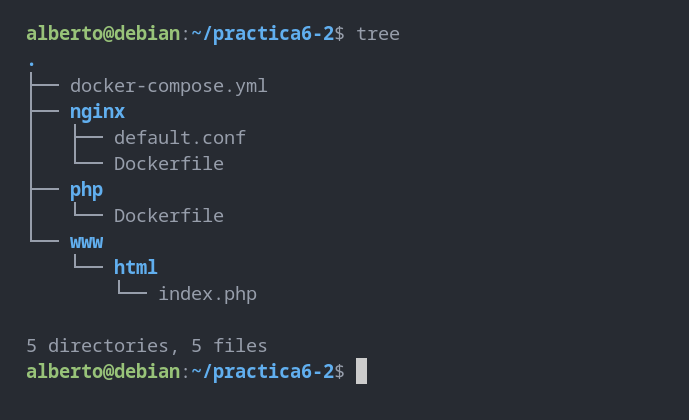
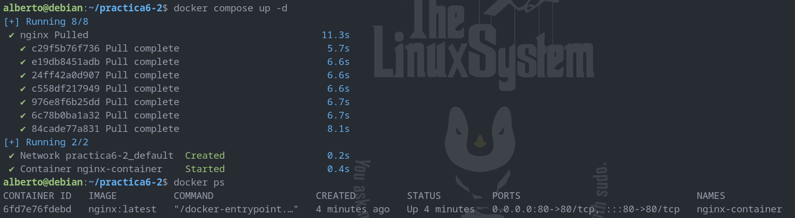
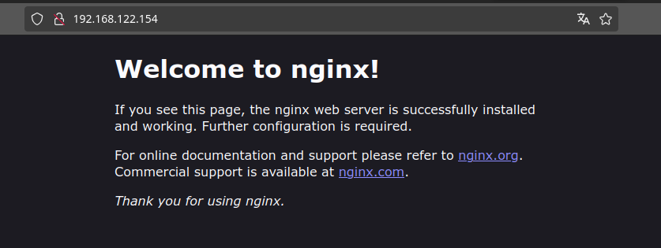
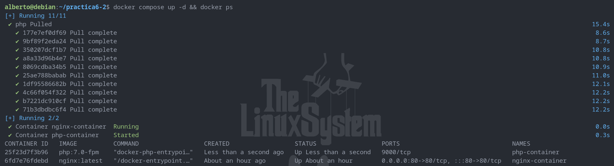
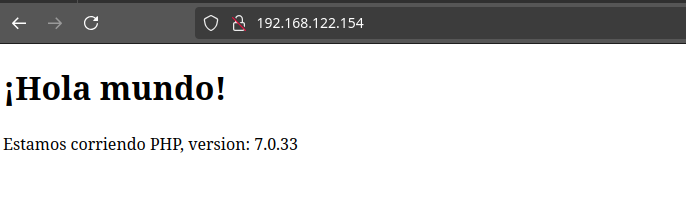
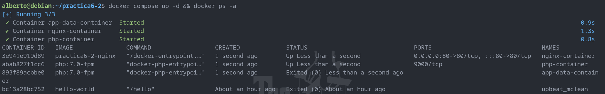
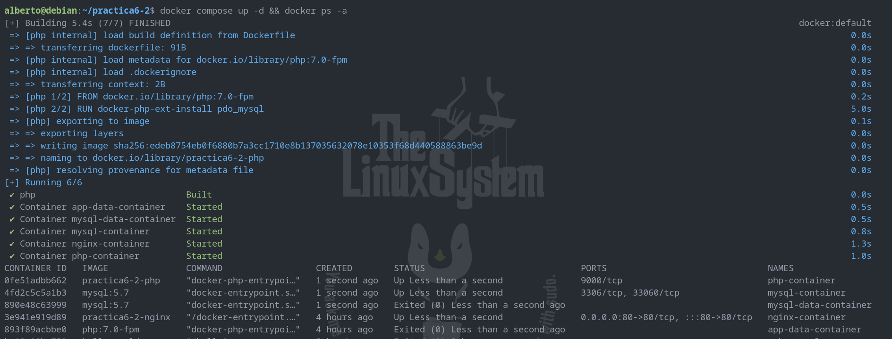
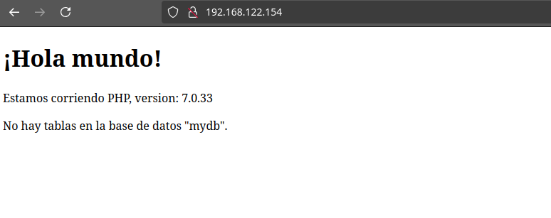
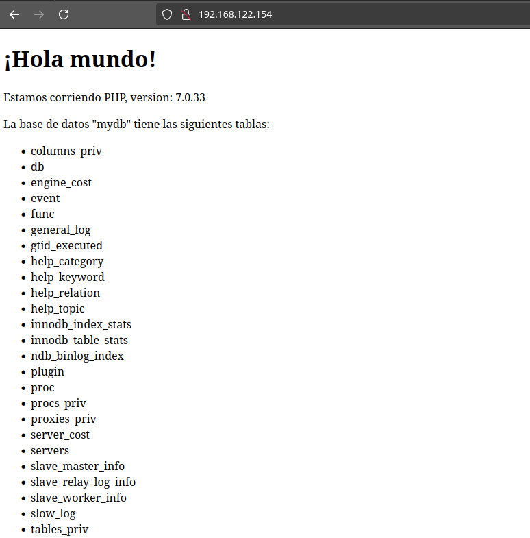

Despliegue de una aplicación PHP con Nginx y MySQL usando Docker y Docker-compose
Para la realización de esta práctica, se parte de una estructura de directorios y archivos tal que:

Creación de un contenedor Nginx
En primer lugar, comenzaremos modificando el archivo docker-compose.yml. Su contenido será:
services:
nginx:
image: nginx:latest
container_name: nginx-container
ports:
- 80:80
Con este contenido estamos indicando que se debe descargar una imagen de la última versión de Nginx, crear un contenedor con ella y que este debe escuchar en el puerto 80 (que se corresponde con el 80 de nuestra máquina).
Para que se lleven a cabo estas acciones, ejecutamos:
docker compose up -d
Y para comprobar que el contenedor está corriendo:
docker ps
Al ejecutar estos comandos, si no ha habido ningún problema, debemos ver la siguiente respuesta:

Y si accedemos al puerto 80 de la IP de la máquina virtual desde el navegador de la máquina anfitriona, veremos:

Lo que significa que Nginx ya está funcionando sin problemas.
Creación de un contenedor PHP
En primer lugar, modificaremos el archivo 'www/html/index.php'. Su contenido será:
<!DOCTYPE html>
<head>
<title>¡Hola mundo!</title>
</head>
<body>
<h1>¡Hola mundo!</h1>
<p><?php echo 'Estamos corriendo PHP, version: ' . phpversion(); ?></p>
</body>
Ahora, para que Nginx pueda correr nuestra aplicación PHP, modificaremos el archivo 'nginx/default.conf'.
El contenido del archivo de configuración será:
server {
listen 80 default_server;
root /var/www/html;
index index.html index.php;
charset utf-8;
location / {
try_files $uri $uri/ /index.php?$query_string;
}
location = /favicon.ico { access_log off; log_not_found off; }
location = /robots.txt { access_log off; log_not_found off; }
access_log off;
error_log /var/log/nginx/error.log error;
sendfile off;
client_max_body_size 100m;
location ~ .php$ {
fastcgi_split_path_info ^(.+.php)(/.+)$;
fastcgi_pass php:9000;
fastcgi_index index.php;
include fastcgi_params;
fastcgi_param SCRIPT_FILENAME $document_root$fastcgi_script_name;
fastcgi_intercept_errors off;
fastcgi_buffer_size 16k;
fastcgi_buffers 4 16k;
}
location ~ /.ht {
deny all;
}
}
Ahora modificaremos el archivo 'nginx/Dockerfile'. Su contenido será:
FROM nginx:latest
COPY ./default.conf /etc/nginx/conf.d/default.conf
Y por último, volveremos a modificar el archivo 'docker-compose.yml' para que se descargue una imagen de PHP y se cree un contenedor a partir de ella. El nuevo contenido de este archivo será:
services:
nginx:
build: ./nginx/
container_name: nginx-container
ports:
- 80:80
links:
- php
volumes:
- ./www/html/:/var/www/html/
php:
image: php:7.0-fpm
container_name: php-container
expose:
- 9000
volumes:
- ./www/html/:/var/www/html/
Volvemos a ejecutar los comandos:
docker compose up -d
docker ps
El resultado es:

Si ahora volvemos a acceder a nuestra máquina virtual a través del puerto 80 usando el navegador, podremos observar el contenido de la aplicación PHP que hemos creado, servida por Nginx:

Ya tenemos Nginx y PHP funcionando sin problemas.
Creación de un contenedor para Datos
En el 'docker-compose.yml' está indicado que, tanto para Nginx como para PHP, hay que montar el directorio 'www/html'. Una manera más adecuada de hacerlo es crear un contenedor independiente para datos que se enlace con los contenedores ya existentes de Nginx y PHP. Para ello, volveremos a modificar el archivo 'docker-compose.yml'. Su nuevo contenido será:
services:
nginx:
build: ./nginx/
container_name: nginx-container
ports:
- 80:80
links:
- php
volumes_from:
- app-data
php:
image: php:7.0-fpm
container_name: php-container
expose:
- 9000
volumes_from:
- app-data
app-data:
image: php:7.0-fpm
container_name: app-data-container
volumes:
- ./www/html/:/var/www/html/
command: "true"
Volvemos a ejecutar:
docker compose up -d
docker ps -a
El resultado debe ser:

Creación de un contenedor MySQL
Por último, crearemos un contenedor con MySQL como BBDD para la aplicación. En primer lugar, nos aseguraremos de que PHP podrá comunicarse con MySQL editando el archivo 'php/Dockerfile' e indicaremos que se instale la extensión de PDO (que sirve en PHP para crear conexiones a BBDD y realizar consultas). El contenido del archivo será:
FROM php:7.0-fpm
RUN docker-php-ext-install pdo_mysql
Tendremos que editar el archivo 'docker-compose.yml' por última vez para que se generen contenedores que gestionen la BBDD MySQL así como para relacionarlos con los contenedores que ya hemos creado (PHP, Nginx, app-data). El contenido final de 'docker-compose.yml' será:
services:
nginx:
build: ./nginx/
container_name: nginx-container
ports:
- 80:80
links:
- php
volumes_from:
- app-data
php:
build: ./php/
container_name: php-container
expose:
- 9000
links:
- mysql
volumes_from:
- app-data
app-data:
image: php:7.0-fpm
container_name: app-data-container
volumes:
- ./www/html/:/var/www/html/
command: "true"
mysql:
image: mysql:5.7
container_name: mysql-container
volumes_from:
- mysql-data
environment:
MYSQL_ROOT_PASSWORD: secret
MYSQL_DATABASE: mydb
MYSQL_USER: myuser
MYSQL_PASSWORD: password
mysql-data:
image: mysql:5.7
container_name: mysql-data-container
volumes:
- /var/lib/mysql
command: "true"
También modificaremos el archivo 'www/html/index.php' para que en él se implementen conexión y consultas a la BBDD a través de PDO. El contenido será:
<!DOCTYPE html>
<head>
<title>¡Hola mundo!</title>
</head>
<body>
<h1>¡Hola mundo!</h1>
<p><?php echo 'Estamos corriendo PHP, version: ' . phpversion(); ?></p>
<?
$database ="mydb";
$user = "myuser";
$password = "password";
$host = "mysql";
$connection = new PDO("mysql:host={$host};dbname={$database};charset=utf8", $user, $password);
$query = $connection->query("SELECT TABLE_NAME FROM information_schema.TABLES WHERE TABLE_TYPE='BASE TABLE'");
$tables = $query->fetchAll(PDO::FETCH_COLUMN);
if (empty($tables)) {
echo "<p>No hay tablas en la base de datos \"{$database}\".</p>";
} else {
echo "<p>La base de datos \"{$database}\" tiene las siguientes tablas:</p>";
echo "<ul>";
foreach ($tables as $table) {
echo "<li>{$table}</li>";
}
echo "</ul>";
}
?>
</body>
</html>
Levantamos los contenedores de la aplicación ejecutando de nuevo:
docker compose up -d
docker ps -a
Que debe devolver una respuesta como esta:

Y si volvemos a acceder desde nuestro navegador a la aplicación:

Que nos responda que "No hay tablas en la base de datos..." no es un error; ahora sólo estamos comprobando que los contenedores se han creado y que están enlazados correctamente. Para que se acceda a la BBDD y se muestren correctamente las tablas de la BBDD será necesario hacer una pequeña modificación.
Verificación de la conexión a la BBDD
El motivo por el que las tablas no están visibles en la aplicación es que la conexión que estamos realizando desde 'www/html/index.php' utiliza los datos de un usuario sin privilegios para acceder a las tablas de la BBDD. Para acceder con un usuario con permisos y que podamos comprobar que la conexión a la BBDD funciona y devuelve datos correctos, es necesario, en 'www/html/index.php', cambiar los valores de dos variables:
$user = "root";
$password = "secret";
Con este pequeño cambio, si accedemos de nuevo a la aplicación desde el navegador, podremos ver los datos almacenados en la BBDD (en este caso, estamos consultando los nombres de las tablas existentes):
